In this tutorial I’m going to show you how to setup a Web Development Lab like the one show above using VirtualBox and Ubuntu Mate.
Disclaimer: Use this tutorial at your own risk! I will not be responsible for any damages or data loss that may result from using this tutorial. Before you get started please backup all your data (photos, documents, books, music, movies, and software) to an external drive or a cloud-based service like Dropbox.
Usually installing VirtualBox and setting up a guest operating system will not cause your system any problems. For the sake of safety please backup your data.
This tutorial will work for all versions of Windows and Mac OS X.
Here’s the step-by-step process:
Click the “New” button in the top left. You’ll get a new window.
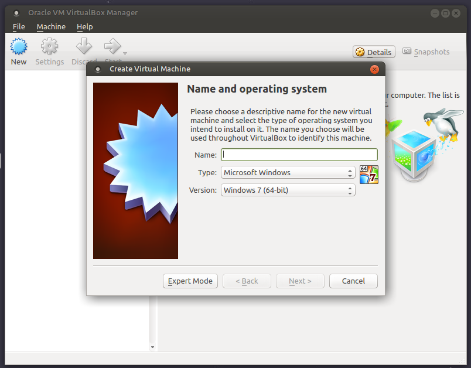Write “DevLab” in the name field. Then click the “Type” drop-down and select Linux. Click the version drop-down and select “Ubuntu (64-bit)” if you are using the 64-bit ISO or 32-bit if you are using the 32-bit ISO. It should look like this.
Now press “Next” and you’ll see the Memory size window. This is the system memory your Virtual OS will use when it is running. This is taking away from your host system memory so be careful not to move the slider into the red zone. At minimum you want to set at least 2GB of memory for your Lab. If your computer doesn’t have that much ram you might need to add ram or use a different system. In the screenshot below you can see that I’m using 4GB of 12GB in my system.
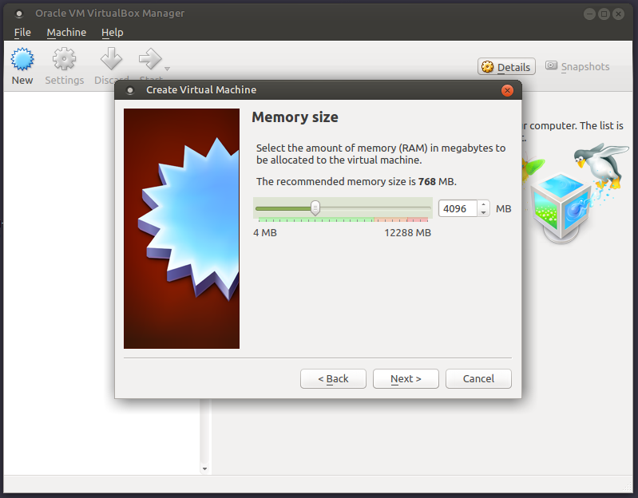The next step is to set up a virtual hard disk. This is a file that will act like a hard drive where the operating system and all of your files will be stored.
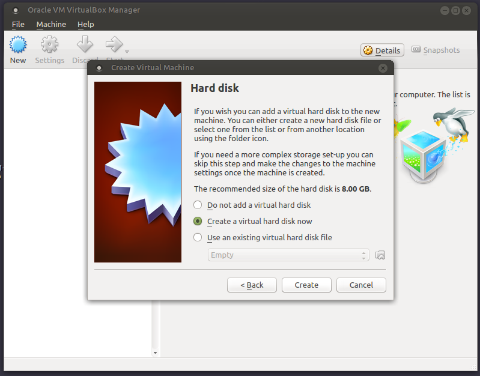When you press “Create” at the bottom you’ll get a screen that asks you what type of hard disk you want to create. Just leave the default VDI at the top and click next.
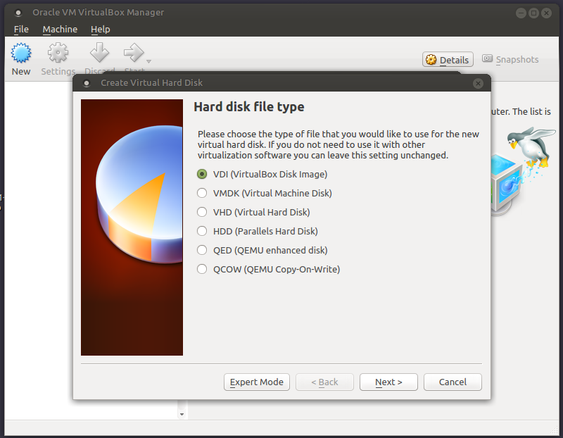The next screen will ask you about the storage on the physical hard disk. You have two options, “Dynamically allocated” or “Fixed size”. For our test we will stick with the default of “Dynamically allocated” and press next.
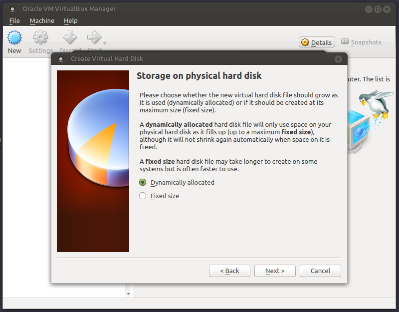The next screen will ask you two things. First, where do you want to store this virtual hard disk? Just leave the default and focus on the slider. It is asking how much space do you want your virtual hard disk to have? I’m giving mine 20GB of space. You can use this size as a minimum or give yours more space. This does take up space on your actual hard drive. If your host computer has 100GB and you give your virtual drive 20GB, you’ll have 80 left for your host computer. Of course these days most people have much bigger hard drives. In this situation we will only be using the virtual OS for writing code. So we don’t need a lot of space.
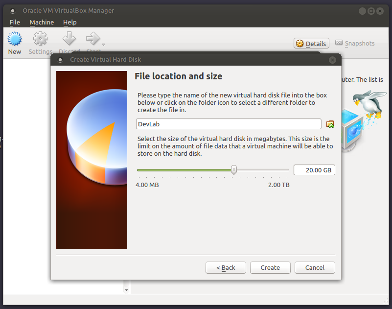When you click the “Create” button it will flash another window briefly and then go back to the main screen. This is normal and tells you we are almost ready to start our Lab. You will see a new virtual OS in the list name “DevLab”.
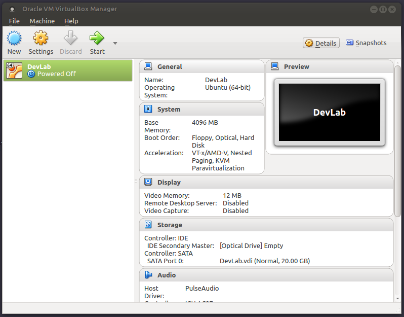We need to make a few adjustments to our setting before starting the Lab. Click the yellow gear icon at the top that says “Settings” under it. A new window will open up showing you the specific settings for your new virtual OS
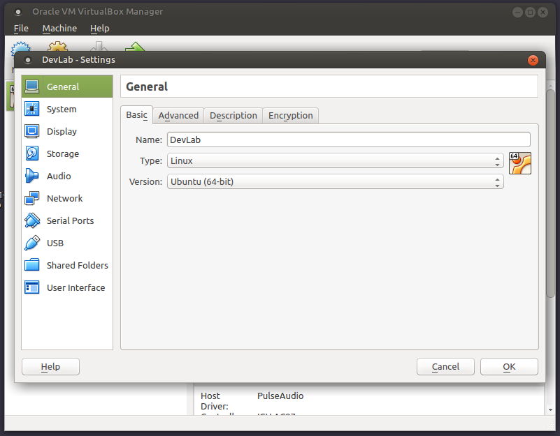We are only going to make a few minor changes and then we can run our Virtualbox and install our OS. The first change I like to make is under General to click the “Advanced” tab and set the “Shared Clipboard” drop-down to “Bidirectional”. This way I can copy and paste text back and forth from my host to my Lab.
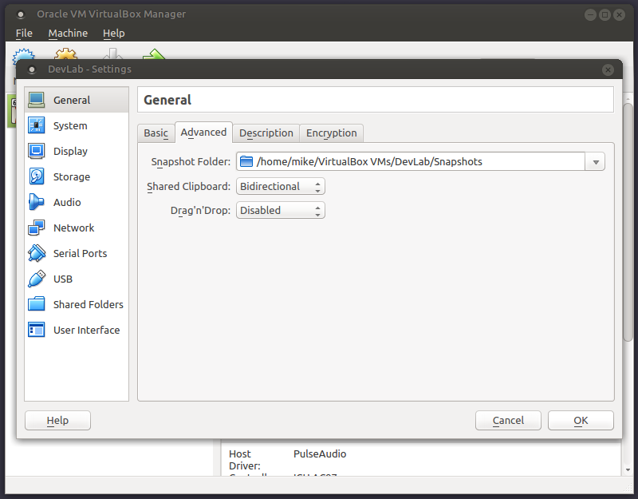On the left click the “System” button and the main window will change. In the main window on the right you’ll again see how much ram we set for the virtual OS. You can come in here and adjust it if you need to. Below that you’ll see a list of items in “Boot Order”. Uncheck the “Floppy” option. We won’t need it and it saves us time if we remove it.
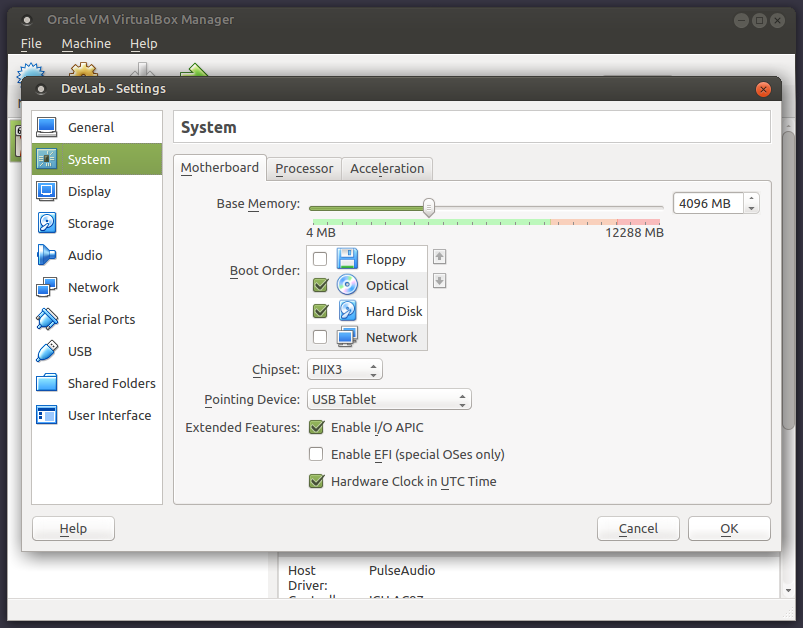On the left again click the next item “Display”. The main window will show you “Video Memory”. Move the slider or type in the box and set it to 32MB.
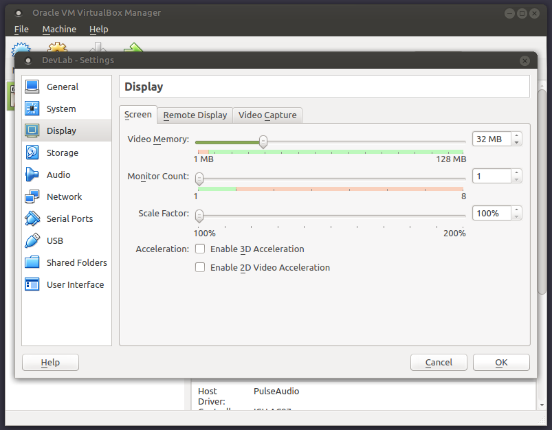On the left click on “Storage”. Under the “Storage Tree” area you’ll see Controller: IDE. You’ll see what looks like an empty CD icon. Click on that and it will highlight. The Attributes menu on the right will change to show “Optical Drive” with a drop-down menu on the right. Click the CD icon to the right of the drop-down menu. That is where we will select the ISO we downloaded.
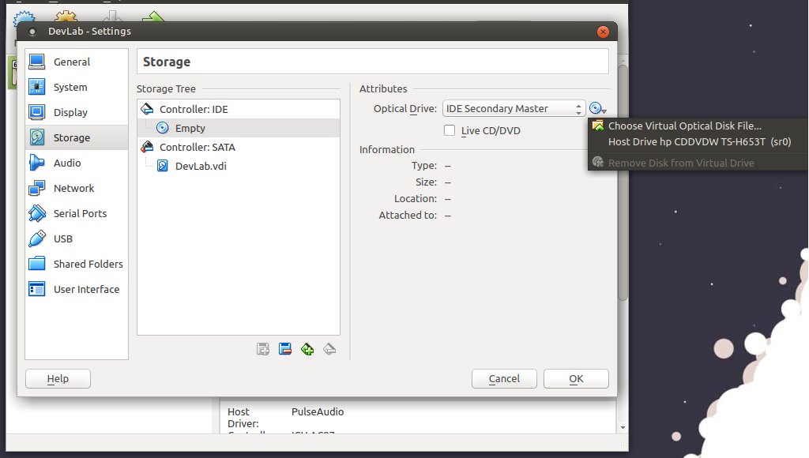With the menu open you’ll click the “Choose Virtual Optical Disc File…” option and get a folder window which will allow you to navigate your computer to find the file you want to use. Click on the file to highlight it and then click open.
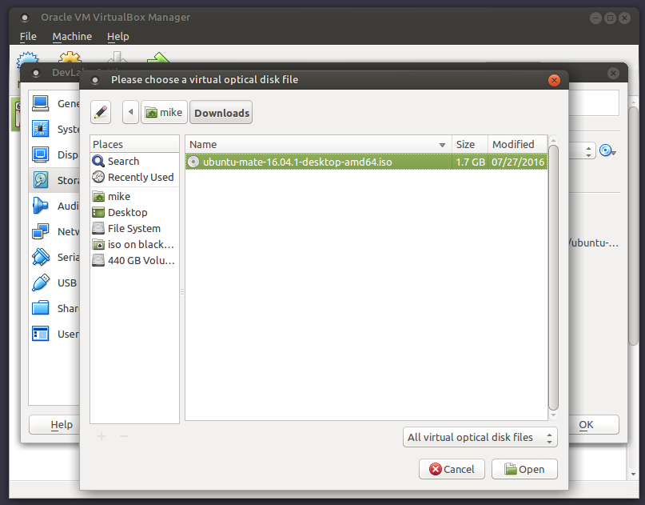After you click open the folder will close and you’ll see in the “DevLab Settings” Under “Storage Tree” the controller: IDE little CD Icon now says “ubuntu-mate-16.04.1-desktop-am…” Basically this means when we start our Virtual OS it will try to load that ISO image as if it was a CD.
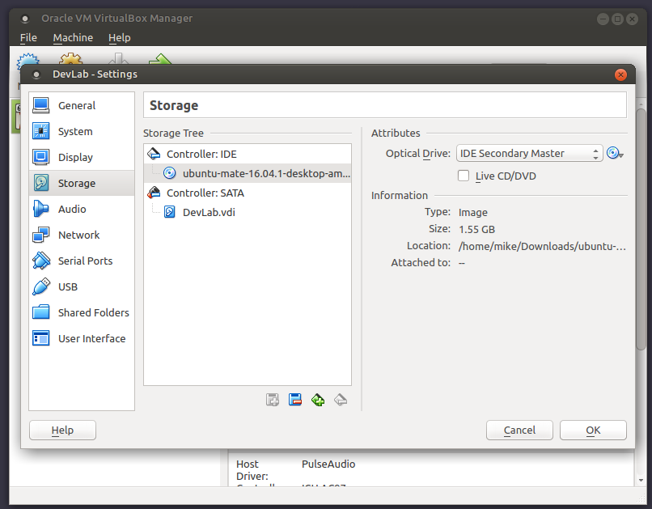Now we can click “OK” at the bottom right and it will close the settings. It will take us back to the main VirtualBox screen. DevLab is now ready to run for the first time. So we can install the Ubuntu Mate OS. Click the green “Start” button.
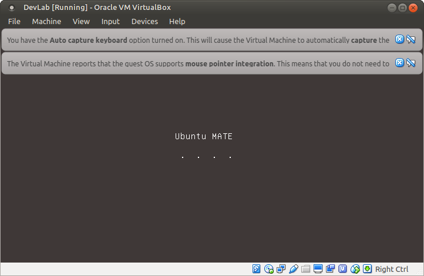A new window will open. This is Virtual OS loading. You’ll see a black screen with white writing, just as if you were booting up a physical computer. Then you’ll see the screen above as Ubuntu Mate boots up. It will take a few minutes as it loads a live desktop. Then you’ll see the screen below. This gives you the option to try Ubuntu Mate or to Install it.
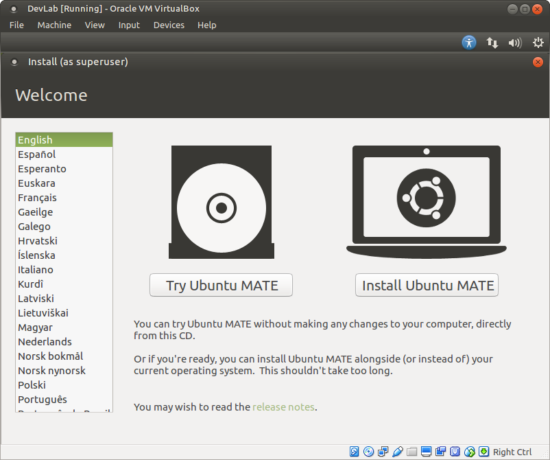Since we are creating a persistent web developer lab you can click the “Install” button. The next screen will show you two check boxes. Check both of them and click “Continue”.
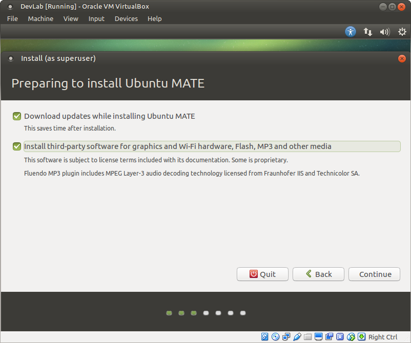Depending on how fast your computer and internet connect is, and how much ram you assigned your virtual OS, this part can take a while to load. Please be patient. Once its finish the screen will change and ask you what type of installation do you want? The first option should be “Erase disk and install Ubuntu Mate”. Remember this is not your physical hard disk in your host computer. This is the virtual disk we created. Just click the “Install Now” button at the bottom right.
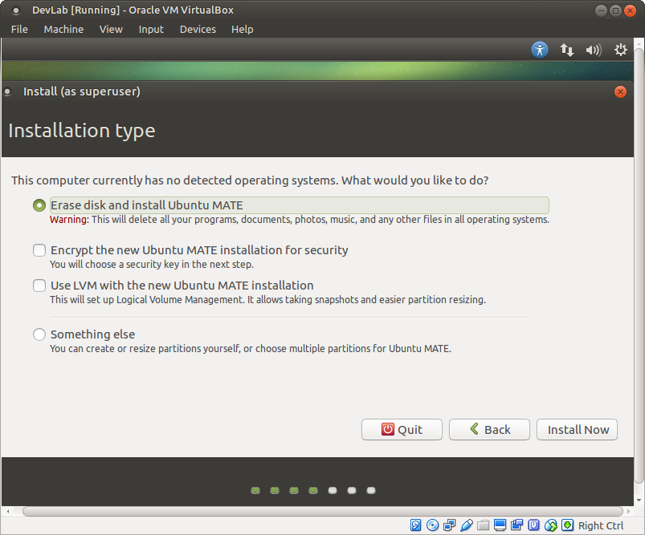The next screen will be a pop-up asking you for permission to write changes to the disks. Just click “Continue”.
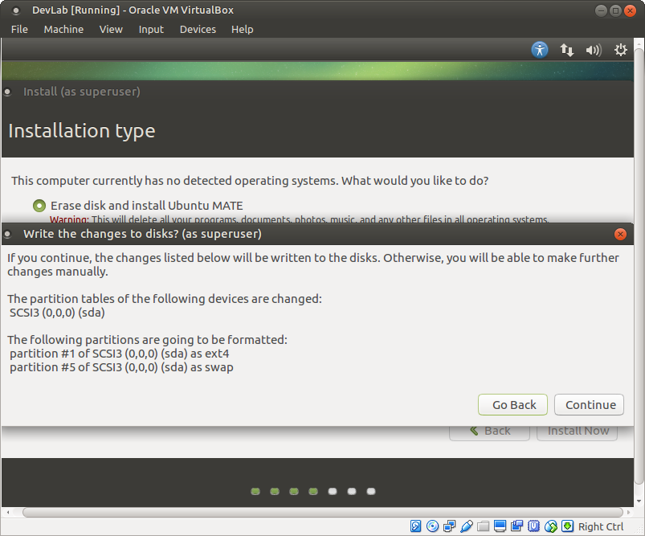The system will start writing writing files to the virtual hard disk. At the same time it will open up the next screen and ask you for some information to setup your account. Just read the screens and answer appropriately. Like, what time zone are you in?
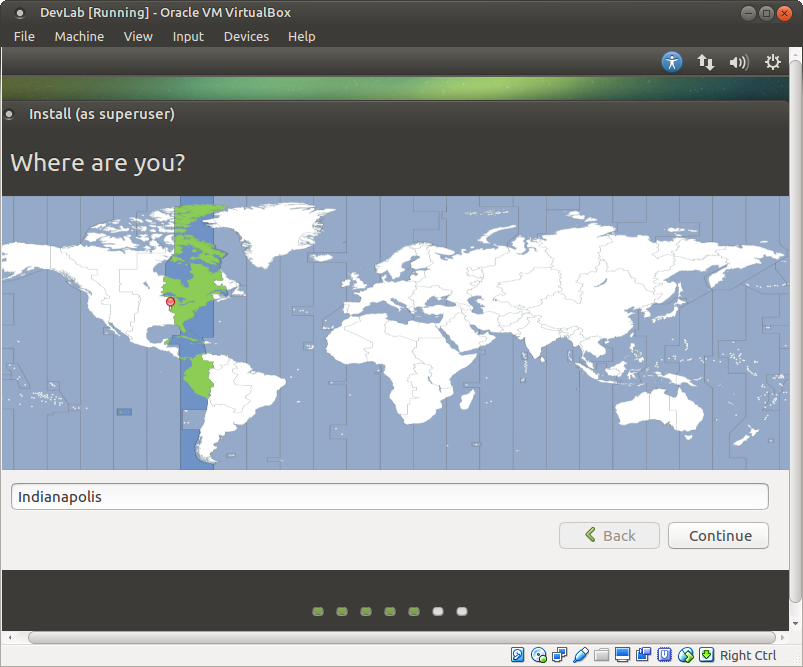Once you have your timezone in place click the “Continue” button on the bottom right. This next screen asks you what language you want the operating system to use. The default is English. In the screenshot below you can see the window seems to be too wide for the screen it is being displayed inside of. You can click on the top border of the inner box and move it to the left. Then you’ll see the “Continue” button.
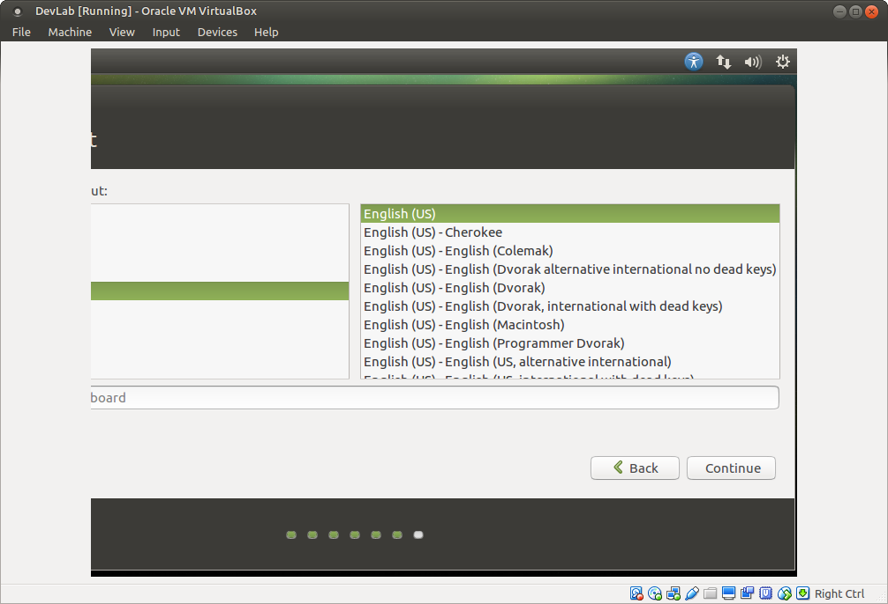Almost done. The next screen will ask you to type in a username and password for your account. Since this is a demo account for this tutorial I put in throw away credentials. You should use your name and a decent password. That’s the last setup screen. Now you click “Continue” at the bottom.
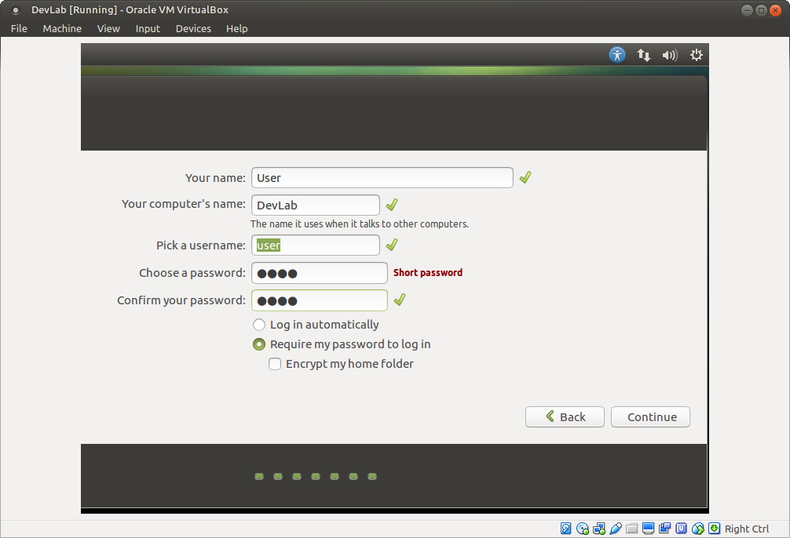The screen below will open up and you’ll see a progress bar along the bottom. It shows how much of the system is installed. This part takes about 10 to 15 minutes. Just sit back and relax. Once it’s done you’ll get one final screen saying the system is ready for a reboot.
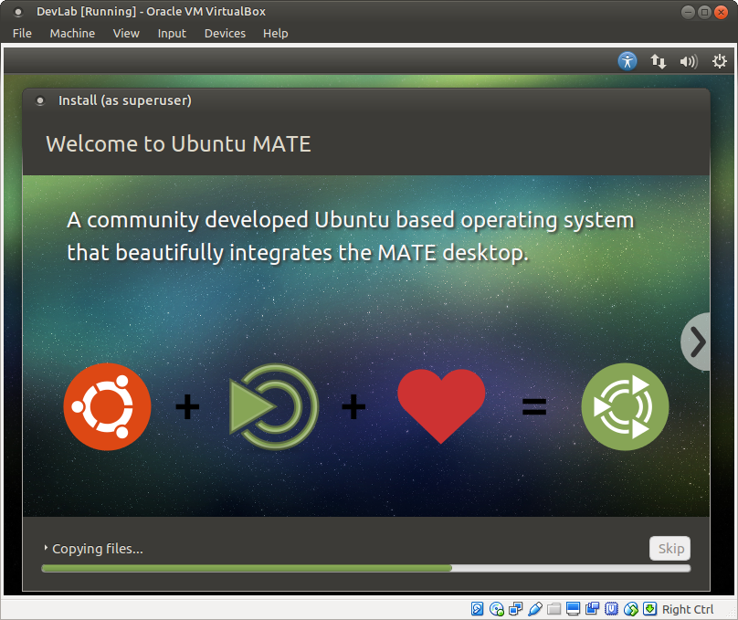Once you see the screen below you can click “Restart Now” and it will restart your VirtualBox and boot into your new Ubuntu MATE installation.
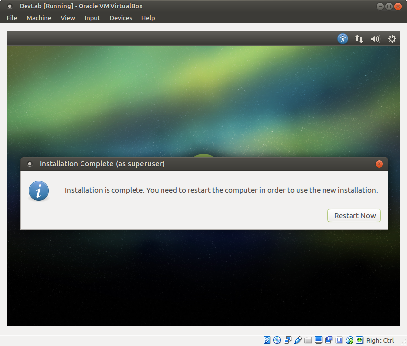Once you get to the login screen put in the username and password you created. The desktop will load and you’ll be ready to set up your virtual lab for web development. Check out part 2 for installing and configuring your web development tools.
You can download part 1 of this tutorial as a PDF: Starcore Labs - Web Development on Linux- Part 1.pdf.
If you like this post or have suggestions let me know on Twitter@starcorelabs
Would you like to hire us? That's great! Give us a call or send us an email and we will get back to you as soon as possible!
317-731-2795